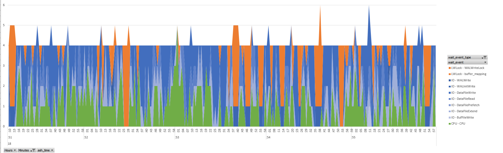

This was first published on https://www.dbi-services.com/blog/drilling-down-the-pgsentinel-active-session-history/ (2018-07-15)
Republishing here for new followers. The content is related to the versions available at the publication date.
.
In pgSentinel: the sampling approach for PostgreSQL I mentioned that one of the advantages of the ASH approach is the ability to drill down from an overview of the database activity, down to the details where we can do some tuning. The idea is to always focus on the components which are relevant to our tuning goal:
The idea is to start at a high level. Here is a GROUP BY BACKEND_TYPE to show the activity of the ‘client backend’ and the ‘autovacuum worker’:
select count(*), backend_type
from pg_active_session_history
where ash_time>=current_timestamp - interval '5 minutes'
group by backend_type
order by 1 desc
;
count | backend_type
-------+-------------------
1183 | client backend
89 | autovacuum worker
I selected only the last 5 minutes (the total retention is defined by pgsentinel_ash.max_entries and the sampling frequency by pgsentinel_ash.pull_frequency).
I ordered by the number of samples for each one, which gives a good idea of the proportion: most of the activity here for ‘client backend’. It may be more interesting to show a percentage, such as 93% activity is from the client and 7% is from the vacuum. However, this removes an interesting measure about the overall activity. The fact that we have 1183 samples within 5 minutes is an indication of the total load. In 5 minutes, we have 300 seconds, which means that each session can have 300 samples, when being 100% active in the database during that time. 1183 samples during 5 minutes mean that we have on average 1183/300 = 4 sessions active. This measure, calculated from the number of samples divided by the number of seconds, and known as Average Active Sessions (AAS) gives two different piece of information:
In the previous post I counted the number of samples with count(distinct ash_time) because I knew that I had several sessions active during the whole time. But if there are periods of inactivity during those 5 minutes, there are no samples at all. And when drilling down to more detail, there will be some samples with no activity for a specific group. Here I calculate the number of seconds covered by the samples, using a window function:
with ash as (
select *,ceil(extract(epoch from max(ash_time)over()-min(ash_time)over()))::numeric samples
from pg_active_session_history where ash_time>=current_timestamp - interval '5 minutes'
) select round(count(*)::numeric/samples,2) as "AAS",
backend_type
from ash
group by samples,
backend_type
order by 1 desc fetch first 20 rows only
;
AAS | backend_type
-------+-------------------
3.95 | client backend
0.29 | autovacuum worker
(2 rows)
From this output, I know that I have about 4 client sessions running. This is what I want to tune.
Adding the WAIT_EVENT_TYPE to the GROUP BY, I can have more detail about the resources used by those sessions:
with ash as (
select *,ceil(extract(epoch from max(ash_time)over()-min(ash_time)over()))::numeric samples
from pg_active_session_history where ash_time>=current_timestamp - interval '5 minutes'
) select round(count(*)::numeric/samples,2) as "AAS",
backend_type,wait_event_type
from ash
group by samples,
backend_type,wait_event_type
order by 1 desc fetch first 20 rows only
;
AAS | backend_type | wait_event_type
-------+-------------------+-----------------
2.57 | client backend | IO
0.94 | client backend | CPU
0.45 | client backend | LWLock
0.16 | autovacuum worker | CPU
0.12 | autovacuum worker | IO
0.00 | autovacuum worker | LWLock
(6 rows)
This gives a better idea about which system component may be tuned to reduce the response time or the throughput. IO is the major component here with 2.57 AAS being on an I/O call. Let’s get more information about which kind of I/O.
Drilling down to the wait event:
with ash as (
select *,ceil(extract(epoch from max(ash_time)over()-min(ash_time)over()))::numeric samples
from pg_active_session_history where ash_time>=current_timestamp - interval '5 minutes'
) select round(count(*)::numeric/samples,2) as "AAS",
backend_type,wait_event_type,wait_event
from ash
group by samples,
backend_type,wait_event_type,wait_event
order by 1 desc fetch first 20 rows only
;
AAS | backend_type | wait_event_type | wait_event
-------+-------------------+-----------------+------------------
1.52 | client backend | IO | DataFileWrite
0.94 | client backend | CPU | CPU
0.46 | client backend | IO | DataFileExtend
0.41 | client backend | IO | DataFileRead
0.33 | client backend | LWLock | WALWriteLock
0.15 | autovacuum worker | CPU | CPU
0.12 | client backend | LWLock | buffer_mapping
0.10 | autovacuum worker | IO | DataFileRead
0.08 | client backend | IO | WALInitWrite
0.08 | client backend | IO | BufFileWrite
0.02 | client backend | IO | WALWrite
0.01 | autovacuum worker | IO | DataFileWrite
0.01 | client backend | IO | DataFilePrefetch
0.00 | client backend | LWLock | buffer_content
0.00 | autovacuum worker | LWLock | buffer_mapping
(15 rows)
This gives more information. The average 2.57 sessions active on IO are actually writing for 1.52 of them, reading for 0.46 of them, and waiting for the datafile to be extended for 0.46 of them. That helps to focus on the areas where we might improve the performance, without wasting time on the events which are only a small part of the session activity.
This was a drill-down on the system axis (wait events are system call instrumentation). This is useful when we think something is wrong on the system or the storage. But performance tuning must also drive the investigation on the application axis. The higher level is the user call, the TOP_LEVEL_QUERY:
with ash as (
select *,ceil(extract(epoch from max(ash_time)over()-min(ash_time)over()))::numeric samples
from pg_active_session_history where ash_time>=current_timestamp - interval '5 minutes'
) select round(count(*)::numeric/samples,2) as "AAS",
backend_type,top_level_query
from ash
group by samples,
backend_type,top_level_query
order by 1 desc fetch first 20 rows only
;
AAS | backend_type | top_level_query
-------+-------------------+-------------------------------------------------------------------------------------------------------------------------------------------------------------------------------------
0.95 | client backend | SELECT * FROM mypgio('pgio3', 50, 3000, 131072, 255, 8);
0.95 | client backend | SELECT * FROM mypgio('pgio2', 50, 3000, 131072, 255, 8);
0.95 | client backend | SELECT * FROM mypgio('pgio4', 50, 3000, 131072, 255, 8);
0.95 | client backend | SELECT * FROM mypgio('pgio1', 50, 3000, 131072, 255, 8);
0.25 | autovacuum worker | autovacuum: VACUUM ANALYZE public.pgio2
0.02 | client backend | commit;
0.01 | client backend | select * from pg_active_session_history where pid=21837 order by ash_time desc fetch first 1 rows only;
0.01 | client backend | with ash as ( +
| | select *,ceil(extract(epoch from max(ash_time)over()-min(ash_time)over()))::numeric samples +
| | from pg_active_session_history where ash_time>=current_timestamp - interval '5 minutes' +
...
Here I see 4 user calls responsible for most of the 4 active sessions related to the ‘client backend’, each one with AAS=0.95 and this is actually what is running: the PGIO benchmark (see https://kevinclosson.net/) with 4 sessions calling mypgio function.
The function we see in TOP_LEVEL_QUERY is itself running some queries, and the big advantage of the pgSentinel extension, over pg_stat_activity, is the capture of the actual statement running, with the actual values of the parameters:
with ash as (
select *,ceil(extract(epoch from max(ash_time)over()-min(ash_time)over()))::numeric samples
from pg_active_session_history where ash_time>=current_timestamp - interval '5 minutes'
) select round(count(*)::numeric/samples,2) as "AAS",
backend_type,substr(query,1,100)
from ash
group by samples,
backend_type,substr(query,1,100)
order by 1 desc fetch first 20 rows only
;
AAS | backend_type | substr
-------+-------------------+----------------------------------------------------------------------------------------
0.26 | autovacuum worker |
0.02 | client backend | commit
0.02 | client backend | SELECT sum(scratch) FROM pgio1 WHERE mykey BETWEEN 3567 AND 3822
0.01 | client backend | SELECT sum(scratch) FROM pgio4 WHERE mykey BETWEEN 5729 AND 5984
0.01 | client backend | SELECT sum(scratch) FROM pgio4 WHERE mykey BETWEEN 5245 AND 5500
0.01 | client backend | truncate table l_ash.ps
0.01 | client backend | SELECT sum(scratch) FROM pgio1 WHERE mykey BETWEEN 3249 AND 3504
0.01 | client backend | SELECT sum(scratch) FROM pgio1 WHERE mykey BETWEEN 57 AND 312
0.01 | client backend | UPDATE pgio4 SET scratch = scratch + 1 WHERE mykey BETWEEN 3712 AND 3720
0.01 | client backend | SELECT sum(scratch) FROM pgio2 WHERE mykey BETWEEN 1267 AND 1522
0.01 | client backend | SELECT sum(scratch) FROM pgio1 WHERE mykey BETWEEN 703 AND 958
0.01 | client backend | SELECT sum(scratch) FROM pgio2 WHERE mykey BETWEEN 2025 AND 2280
0.01 | client backend | insert into l_ash.ps_diff +
| | select ps1.pid,ps1.uname,ps1.pr,ps1.ni,ps1.virt,ps1.res,ps1.shr,ps1.s,ps1.
0.01 | client backend | UPDATE pgio4 SET scratch = scratch + 1 WHERE mykey BETWEEN 2690 AND 2698
0.01 | client backend | SELECT sum(scratch) FROM pgio3 WHERE mykey BETWEEN 5463 AND 5718
0.01 | client backend | SELECT sum(scratch) FROM pgio4 WHERE mykey BETWEEN 1467 AND 1722
0.01 | client backend | SELECT sum(scratch) FROM pgio1 WHERE mykey BETWEEN 4653 AND 4908
(20 rows)
Here, no session is at the top. We have a few samples for each execution. This is because each execution is different (different values for the parameters) and they have a balanced execution time. If we had one query being longer with one specific set of parameter values, it would show up at the top here.
Finally, we can also aggregate at a higher level than QUERY with QUERYID which is per prepared statement and do not change when executing with different parameter values. If we want to get the text, then we can join with PG_STAT_STATEMENTS
with ash as (
select *,datid dbid,ceil(extract(epoch from max(ash_time)over()-min(ash_time)over()))::numeric samples
from pg_active_session_history where ash_time>=current_timestamp - interval '5 minutes'
) select round(count(*)::numeric/samples,2) as "AAS",dbid,
backend_type,queryid,pg_stat_statements.query
from ash left outer join pg_stat_statements using(dbid,queryid)
group by samples,dbid,
backend_type,queryid,pg_stat_statements.query
order by 1 desc fetch first 15 rows only
;
AAS | dbid | backend_type | queryid | query
-------+-------+----------------+------------+------------------------------------------------------------------------------------------------------
0.89 | 17487 | client backend | 837728477 | SELECT sum(scratch) FROM pgio2 WHERE mykey BETWEEN 100926 AND 101181
0.70 | 17487 | client backend | 3411884874 | SELECT sum(scratch) FROM pgio4 WHERE mykey BETWEEN $1 AND $2
0.68 | 17487 | client backend | 1046864277 | SELECT sum(scratch) FROM pgio3 WHERE mykey BETWEEN 1591 AND 1846
0.67 | 17487 | client backend | 2994234299 | SELECT sum(scratch) FROM pgio1 WHERE mykey BETWEEN $1 AND $2
0.33 | 17487 | client backend | 1648177216 | UPDATE pgio1 SET scratch = scratch + 1 WHERE mykey BETWEEN 2582 AND 2590
0.32 | 17487 | client backend | 3381000939 | UPDATE pgio3 SET scratch = scratch + $1 WHERE mykey BETWEEN $2 AND $3
0.30 | 17487 | client backend | 1109524376 | UPDATE pgio4 SET scratch = scratch + 1 WHERE mykey BETWEEN 5462 AND 5470
0.11 | 17487 | client backend | 3355133240 | UPDATE pgio2 SET scratch = scratch + $1 WHERE mykey BETWEEN $2 AND $3
0.05 | 17547 | client backend | 2771355107 | update l_ash.parameters set value=now(),timestamp=now() where name=$1
0.05 | 17547 | client backend | 1235869898 | update l_ash.parameters set value=$1,timestamp=now() where name=$2
0.02 | 13806 | client backend | 935474258 | select * from pg_active_session_history where pid=$1 order by ash_time desc fetch first $2 rows only
0.01 | 13806 | client backend | 164740364 | with ash as ( +
This shows the main queries running: SELECT and UPDATE on the PGIO1,PGIO2,PGIO3,PGIO4. They run with different parameter values but have the same QUERYID. It seems that PG_STAT_STATEMENTS is not very consistent when capturing the query text: some show the parameter, some other show the values. But you must know that those are the prepared statements. We do not have 0.89 average sessions running the ‘SELECT sum(scratch) FROM pgio2 WHERE mykey BETWEEN 100926 AND 101181’. This is the ‘SELECT sum(scratch) FROM pgio2’ running with different parameter values and for whatever reasons, the PG_STAT_STATEMENTS extension displays one of the set of values rather than ‘BETWEEN $1 AND $2’.
Of course we can also query all samples and drill-down with a graphical tool. For the time axis, this is a better visualization. Here is a quick Excel PivotChart from those 5 minutes samples: 
I always have 4 sessions running, as we have seen in the average, but the wait event detail is not uniform during the timeline. This is where you will drill down on the time axis. This can be helpful to investigate a short duration issue. Or to try to understand non-uniform response time. For example, coming from Oracle, I’m not used to this pattern where, from one second to the other, the wait profile is completely different. Probably because of all the background activity such as Vacuum, WAL, sync buffers to disk, garbage collection,… The workload here, PGIO, the SLOB method for PostgreSQL, is short uniform queries. It would be interesting to have some statistics about the response time variation.
Note that in this database cluster, in addition to the PGIO workload, I have a small application running and committing very small changes occasionally and this why you see the peaks with 1 session on WALWrite and 4 sessions waiting on WALWriteLock. This adds to the chaos of waits.
This extension providing active session sampling is only the first component of pgSentinel so do not spend too much time building queries, reports and graphs on this and let’s see when will come with pgSentinel:
pgSentinel is in progress….@postgresql @amplifypostgres @PostgreSQLFR @BertrandDrouvot @ckikof pic.twitter.com/Pwq8vB69MI
— pgSentinel (@Pg_Sentinel) July 11, 2018
{kind=link}